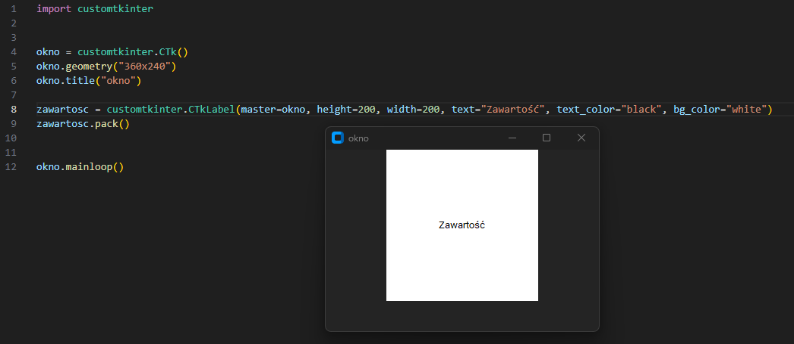

Wielu z nas zainteresowała się programowaniem, przez gry komputerowe.
Każdy chciał nauczyć się programowania, by zaprogramować osobiście swoją grę.
Uczyłeś się bardzo długo i napisałeś wiele fajnych programów. Pomyślałeś - "Jestem już gotowy!"...
I zderzyłeś się z rzeczywistością, aby utworzyć pojedyncze okno musisz pisać jakieś dziwne chieroglify (bynajmniej na Windows 😁).
Na pomoc Ci, ruszyły biblioteki graficzne! W tym artykule zapoznam Cię z jedną z nich.
Z biblioteki TKinter stworzono lepszą, lepiej wyglądającą i prostszą w obsłudze - Customtkinter,
który jest bardzo łatwo implementowany do twojego programu. Żeby zacząć tworzenie aplikacji
okienkowych musimy najpierw zaistalować kilka bibliotek. Wprowadź następujące polecenia do terminalu VS
Code.
Od teraz wystarczy tylko wpisać import customtkinter , a wszystkie klasy i metody będą działać.
Python terminal
pip install tk
pip install customtkinter
pip install packaging
Od teraz wystarczy tylko wpisać import customtkinter , a wszystkie klasy i metody będą działać.
Zaczynamy tworzyć okno. Tworzymy obiekt
customtkinter.CTk(). Określamy wymiary okna funkcją
geometry() i nazwę funkcją
title().
Na koniec dodaj mainloop(), by okno się pokazało. Nie zapomnij o tym!
Na koniec dodaj mainloop(), by okno się pokazało. Nie zapomnij o tym!

Teraz możesz stylizować, dodając obiekty.
Wszystko co chcesz umieścić w oknie, umieść przed mainloop()
Dodaj zmienną customtkinter.CTkLabel(). Najeżdżając kursorem lub klikająć prawym przyciskiem myszy i "Go to the definition" możesz sprawdzić jakie właściwości ma poszczególny obiekt i jakie argumenty przyjmuje.
Gdy utworzysz obiekt, użyj funkcji pack() lub place(), by go wywołać. Zalecane jest użycie pack() maksymalnie do ramki i pierwszej warstwy.
Dodaj zmienną customtkinter.CTkLabel(). Najeżdżając kursorem lub klikająć prawym przyciskiem myszy i "Go to the definition" możesz sprawdzić jakie właściwości ma poszczególny obiekt i jakie argumenty przyjmuje.
Gdy utworzysz obiekt, użyj funkcji pack() lub place(), by go wywołać. Zalecane jest użycie pack() maksymalnie do ramki i pierwszej warstwy.

Jeśli planujesz napisać jakąś aplikację lub grę, w której będą wyświetlane różne okna, powinieneś tworzyć "ramki".
Ramki pozwalają na łatwiejsze zarządzanie i zmianę zawartości okna. (Patrz ostatni film).
Utwórz obiekt w klasie customtkinter.CTkFrame() i ustaw parametr master (obiekt wyżej w herarchi / warstwa pod obecną warstwą) na warstwę główną, tutaj określone jako okno.
Później, gdy tworzysz nowe obiekty, nie zapomnij ustawić master na wyższy obiekt w hierarchi, by bezbłednie się wyświetlały lub nachodziły.
Ramki pozwalają na łatwiejsze zarządzanie i zmianę zawartości okna. (Patrz ostatni film).
Utwórz obiekt w klasie customtkinter.CTkFrame() i ustaw parametr master (obiekt wyżej w herarchi / warstwa pod obecną warstwą) na warstwę główną, tutaj określone jako okno.
Później, gdy tworzysz nowe obiekty, nie zapomnij ustawić master na wyższy obiekt w hierarchi, by bezbłednie się wyświetlały lub nachodziły.
Aby usunąć warstwę lub jakikolwiek gadżet, będziesz musiał wykorzystać
customtkinter.CTkButton() i metodę
command. Użycie
lambda: może zapobiec przed niechcianym uruchomieniem funkcji wraz ze startem programu.
Python
import customtkinter
okno = customtkinter.CTk()
okno.geometry("360x240")
okno.title("okno")
warstwa = customtkinter.CTkFrame(master=okno)
warstwa.pack()
zawartosc = customtkinter.CTkLabel(master=warstwa, height=200, width=200, text="Zawartość", text_color="black", bg_color="white")
zawartosc.pack()
przycisk = customtkinter.CTkButton(master=zawartosc, height=40, width=80, text="Usuń warstwę", text_color="white", command=lambda:func())
przycisk.place(relx=0.5, rely=0.5, anchor=customtkinter.CENTER)
def func():
warstwa.destroy()
okno.mainloop()
Przekształćmy teraz kod na oddzielne funkcje. Każda funkcja odpowiada za 1 okno.
Aby można było wywoływać okna niezależnie,
musimy utworzyć jeszcze jedną funkcję odpowiadającą za niszczenie i tworzenie nowego. Funkcja
Nowe() pobiera 2 argumenty,
pierwszy - ramka obecnego okna do zniszczenia i drugi - funkcja nowego okna do utworzenia.
Python
import customtkinter
okno = customtkinter.CTk()
okno.geometry("360x240")
okno.title("okno")
def Okno_Startowe():
warstwa = customtkinter.CTkFrame(master=okno)
warstwa.pack()
zawartosc = customtkinter.CTkLabel(master=warstwa, height=200, width=200, text="Zawartość", text_color="black", bg_color="white")
zawartosc.pack()
Okno_Startowe()
okno.mainloop()
Python
import customtkinter
okno = customtkinter.CTk()
okno.geometry("360x240")
okno.title("okno")
def Okno_Startowe():
warstwa = customtkinter.CTkFrame(master=okno)
warstwa.pack()
zawartosc = customtkinter.CTkLabel(master=warstwa, height=200, width=200, text="Zawartość", text_color="black", bg_color="white")
zawartosc.pack()
Okno_Startowe()
okno.mainloop()
Jeśli zainteresowałeś się tematem, sprawdź dokumentacje widżetów, aby poszerzyć swoją wiedzę.
Dokumentacje
Widżetów
Pliki kursu: Python
Pliki kursu: Python